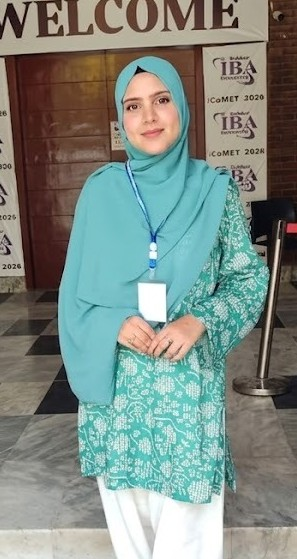

AI Researcher • Computer Vision • Deep Learning • Signal Processing
Passionate about advancing intelligent systems through research in defect detection, image super-resolution, and signal processing. Based in Sukkur, Sindh, Pakistan.
I am a final-year Computer Systems Engineering student at Sukkur IBA University, maintaining a CGPA of 3.50 / 4.00 in a PEC-accredited (Washington Accord) program.
My research spans computer vision, non-destructive testing, digital signal processing, and multi-modal deep learning. I have contributed to multiple published and preprint research projects covering CFRP defect detection, DDoS mitigation using transformers, and multimodal fake-news detection utilizing evidential reasoning frameworks.
Beyond research, I have real-world internship experience integrating AI workflows in healthcare and conducting systems-engineering analysis at a national insurance corporation.
VitaNova – International Alliance for Sciences
State Life Insurance Corporation of Pakistan, Sukkur
Complete framework for automated detection, segmentation, and depth estimation of subsurface defects in Carbon Fiber Reinforced Polymer (CFRP) composites using Optical Pulse Thermography. Combines object detection, semantic segmentation, and physics-informed ML regression for depth prediction, bridging raw thermographic data to actionable defect intelligence.
End-to-end audio processing system restoring speech clarity in high-noise environments using spectral subtraction, noise gating, STFT/ISTFT processing, and Butterworth filter design. Evaluated via SNR analysis and spectrogram visualization.
Rigorous comparison of DCT-based JPEG vs. Wavelet-based JPEG2000. Custom Python pipeline (OpenCV, PyWavelets) with automated PSNR and SSIM metrics plus difference-map visualizations across various compression ratios.
High-performance multi-stage pipeline: Noise Spectrum Estimation, Spectral Subtraction, and Butterworth Band-Pass filtering. Robust SNR evaluation suite with comparative spectrogram generation to validate processing efficacy.
Digital elevator controller for 5 floors (0 to 4) using a Moore Finite State Machine. Manhattan distance-based nearest-request algorithm and timer-controlled door dwell. Verified via comprehensive behavioral simulation and testbench scenarios.
Low-cost real-time health monitoring using ESP32 with PulseSensor and LM35 sensors. Streams physiological data to the Blynk app, with threshold-based emergency email alerts and dual visualization via LCD and cloud dashboards.
Mobile robot simulation in ROS 2 Humble and Gazebo. Custom 4-wheeled URDF robot with dual-sensor suite (Sonar and Camera) enabling obstacle awareness, providing a foundation for autonomous navigation and environment mapping.
Speaker identification converting time-domain voice signals to frequency-domain via FFT to extract unique pitch characteristics. Custom MATLAB training and testing workflow using mathematical distance-based identification for biometric security.
Desktop application digitalizing academic administration with role-based access control (Admin, Teacher, Student, Parent), secure MySQL integration, and an embedded ML module providing predictive analytics on student outcomes.
Full-stack web platform managing patient records, doctor schedules, and billing. Built with ASP.NET, C#, and JavaScript. Fully deployed and live at chms.somee.com.
International Journal of Multidisciplinary Conference Proceedings (IJMCP), Vol. 2(1)
Benchmarked ML and DL models for multi-class DDoS detection on CICDDoS2019. LightGBM and XGBoost achieved the best accuracy-speed balance for real-time network security operations.
DOI: 10.61503/Ijmcp.v2i1.181iCoMET 2025, IEEE Xplore
Compared YOLOv8, Faster R-CNN, and Mask R-CNN architectures for automated CFRP debond detection. Mask R-CNN achieved the highest evaluation metrics with pixel-level defect semantic segmentation.
Target Journal to be Confirmed
Proposed an automated, architecture-independent input representation using a unique three-channel fusion based on cyclic alignment of raw thermal intensity, Principal Component Analysis (PCA), and Thermographic Signal Reconstruction (TSR) to isolate extremely small and low-contrast subsurface defects.
Target Journal to be Confirmed
Proposed an end-to-end two-stage processing pipeline extracting 16 tailored physics-informed transient thermal features to robustly predict through-thickness depth and reconstruct dense 3D topologies of internal CFRP subsurface delaminations.
Target Journal to be Confirmed
Engineered a Cross-Modal Consistency Module (CMM) coupled with a Dempster-Shafer evidential fusion layer, utilizing targeted 2D Fast Fourier Transform (FFT) features for highly robust uncertainty quantification in advanced multi-modal forgery detection.
Udemy
Neural networks, training deep learning models, activation functions, backpropagation, gradient descent, and real-world image recognition applications.
View CertificateCoursera
Deep neural networks, forward and backward propagation, Adam and RMSprop optimization, dropout, batch normalization, and hyperparameter tuning for complex pattern recognition.
View CertificateCoursera (Andrew Ng)
Supervised models, neural networks, decision trees, unsupervised learning, recommender systems, anomaly detection, and deep reinforcement learning.
View CertificateCoursera
Clustering, anomaly detection, collaborative filtering, content-based deep learning for recommenders, and building deep reinforcement learning models.
View CertificateCoursera
ML models with NumPy and scikit-learn, linear regression, logistic regression, feature engineering, data preprocessing, and model evaluation techniques.
View CertificateOpen to research collaborations, academic opportunities, and engineering roles. Reach out through any of the channels below.